ggplot2图形对象是包含数据、映射、图层、标度、坐标和分面的列表，ggplot2绘图采用逐层叠加
数据集：mpg
数据介绍：
加载了 ggplot2 包后，里面自带了一个 mpg 数据集，共 234 条观测，是有关车辆燃料的。11 个变量如下：
- 制造商：manufacturer
- 模具型号：model
- 排放量：displ (engine displacement, in litres)
- 年份：year
- 发动机数量：cyl (number of cylinders)
- 变速器形式：trans (type of transmission)
- 驱动形式：drv (f = front-wheel drive, r = rear wheel drive, 4 = 4wd)
- 每加仑公路行驶距离：hwy (highway miles per gallon)
- 燃料：fl (e: ethenol E85, d: diesel, r: regular, p: premium, c: CNG)
- 车辆类型：class
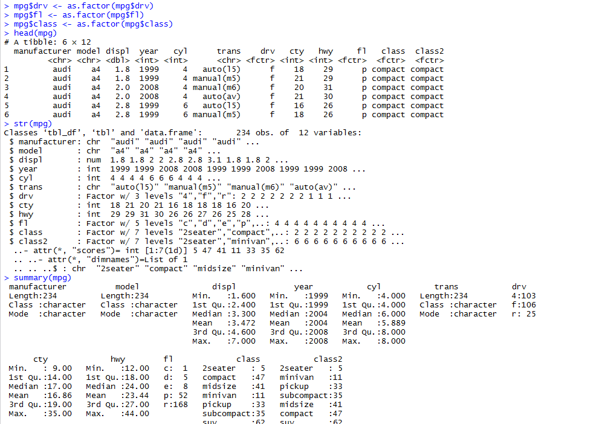
这里将主要利用这个数据集进行绘图。
基本图形
散点图 ：geom_point()
library('ggplot2')
map <- ggplot(data = mpg,mapping= aes(x=cty,y=hwy)) # 加载数据、映射
map + geom_point()
summary(map) ##查看数据结构
summary(map+geom_point())
ggsave('plog.png',width=5,height=5) ##保存图形
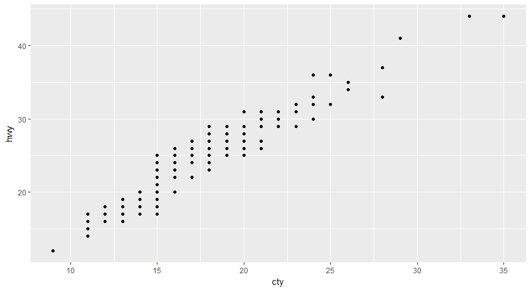
将年份映射到颜色属性 aex(x=,y=,colour =factor(year))
map<-ggplot(mpg,aes(x=cty,y=hwy,colour=factor(year)))
map+geom_point()

增加平滑线 :stat_smooth()
map<-ggplot(mpg,aes(x=cty,y=hwy,colour=factor(year)))
map+geom_point()+stat_smooth()
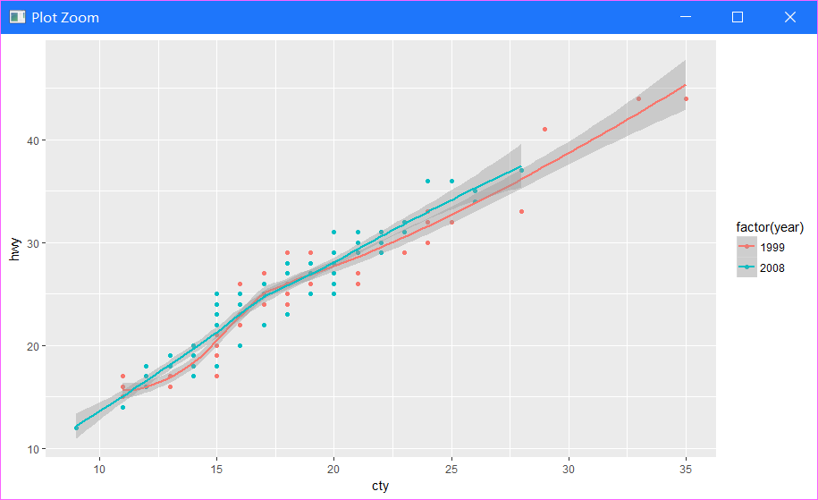
两种等价的绘图方式
#方法一
map<-ggplot(mpg,aes(x=cty,y=hwy))
map+geom_point(aes(colour=factor(year)))+stat_smooth()
#方法二
ggplot()+
geom_point(data=mpg,aes(x=cty,y=hwy,colour=factor(year)))+
stat_smooth(data=mpg,aes(x=cty,y=hwy))#此时除了底层画布外，有两个图层，分别定义了geom和stat
用标度来修改颜色取值 scale_color_manual(values=c("blue","red"))
map<-ggplot(mpg,aes(x=cty,y=hwy))
map+geom_point(aes(colour=factor(year)))+stat_smooth()+scale_color_manual(values=c("blue","red"))
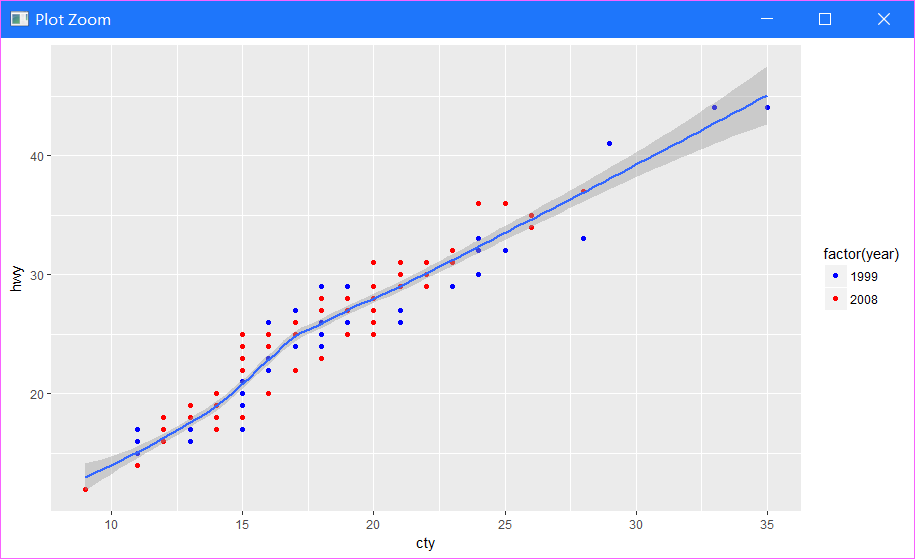
将排量映射到散点大小
map+geom_point(aes(colour=factor(year),size=displ))+
stat_smooth()+
scale_color_manual(values=c("blue2","red4"))
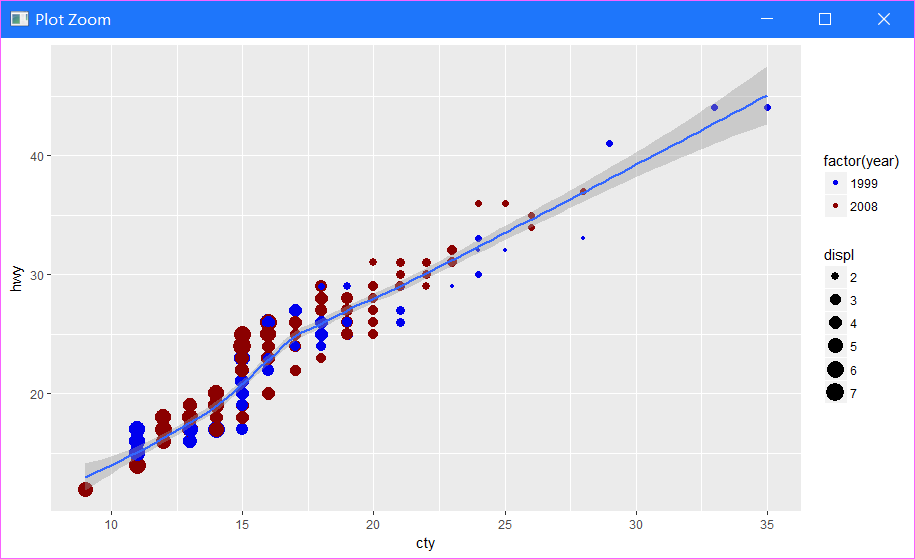
用坐标控制图形显示的范围
map+geom_point(aes(colour=factor(year),size=displ),alpha=0.5,position="jitter")+
stat_smooth()+
scale_color_manual(values=c("blue2","red4"))+
scale_size_continuous(range=c(4,10))+
coord_cartesian(xlim=c(15,25),ylim=c(15,40))
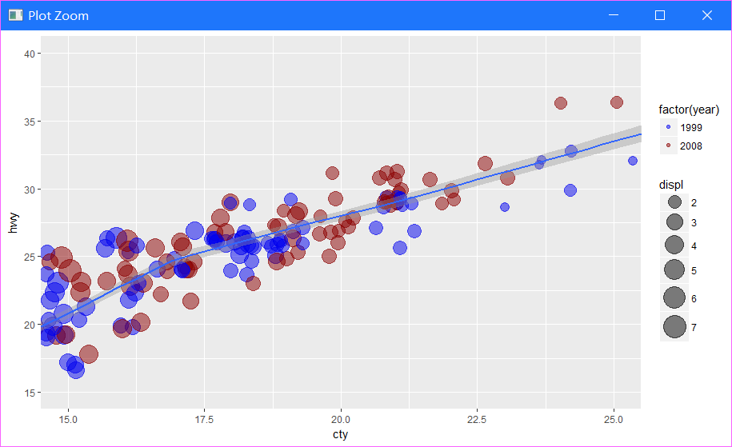
利用facet分别显示不同年份的数据
map+geom_point(aes(colour=class,size=displ),alpha=0.5,position="jitter")+
stat_smooth()+
scale_size_continuous(range=c(4,10))+
facet_wrap(~year,ncol=1)
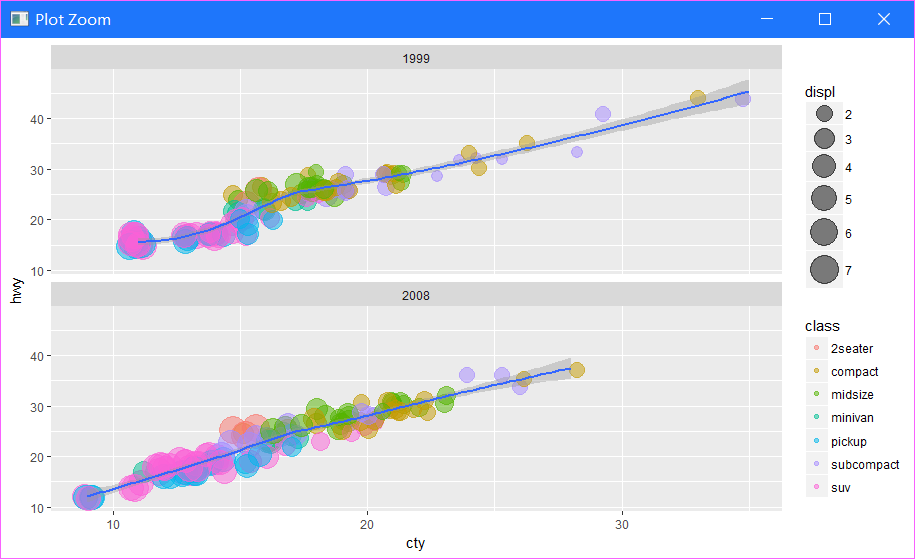
增加图名并精细修改图例
map<-ggplot(mpg,aes(x=cty,y=hwy))
map+geom_point(aes(colour=class,size=displ),alpha=0.5,position="jitter")+
stat_smooth()+
scale_size_continuous(range=c(4,10))+
facet_wrap(~year,ncol=1)+
labs(x="每加仑高速公路行驶距离",y="每加仑城市公路行驶距离")+
guides(size=guide_legend(title="排量"),colour=guide_legend(titile="车型",override.aes=list(size=5)))
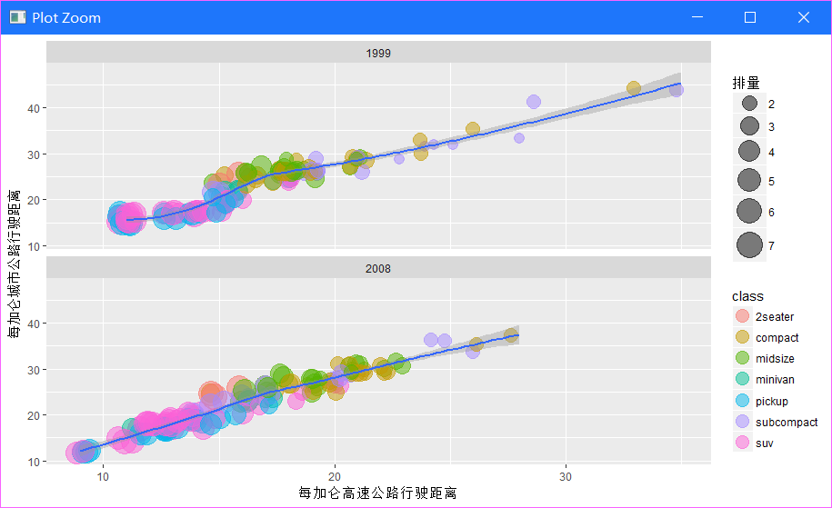
直方图
map<-ggplot(mpg,aes(x=hwy))
map+geom_histogram()
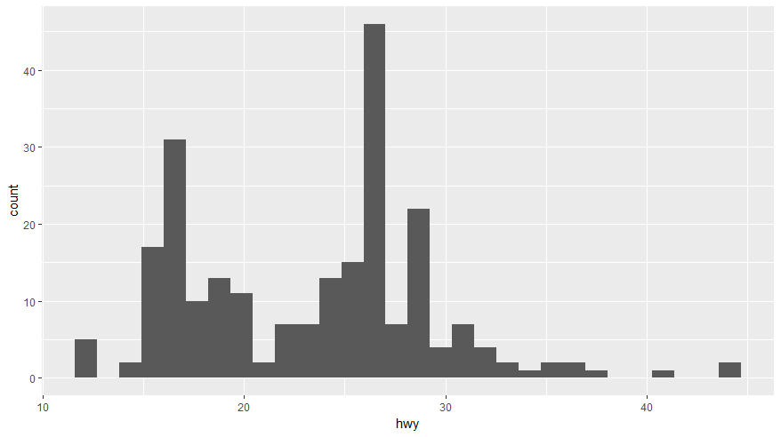
- 直方图的几何对象中内置有默认的统计变换
map+geom_histogram(aes(fill=factor(year),y=..density..),alpha=0.3,colour="black")+
stat_density(geom="line",position="identity",size=1.5,aes(colour=factor(year)))+
facet_wrap(~year,ncol=1)
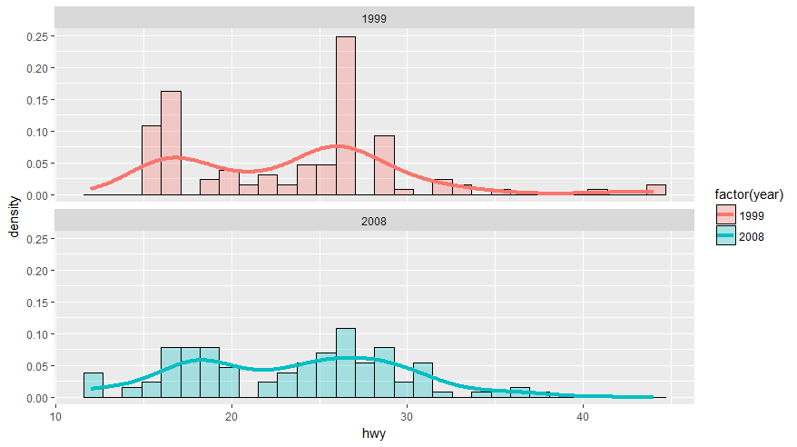
条形图 : geom_bar()
默认纵轴是 x 轴上各离散类的计数（Count），对应的默认参数是 geom_bar(stat="count")
map<-ggplot(mpg,aes(x=class))
map+geom_bar()
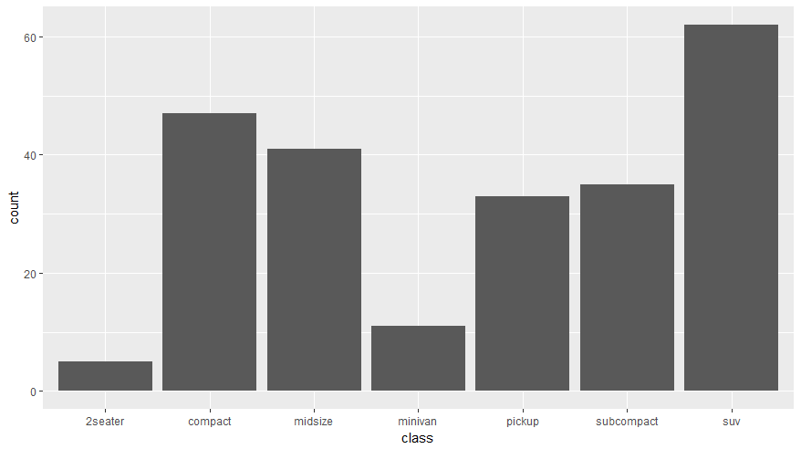
如果想用其他值代替，需要在 ggplot() 中指定 aes(y=) 参数，并且在条形图函数中改动为 geom_bar(stat="identity")。
# 以各类内部的排放量作为对应的 y 值，进行累加
map = ggplot(mpg, aes(x=class, y=displ))
map + geom_bar(stat="identity")
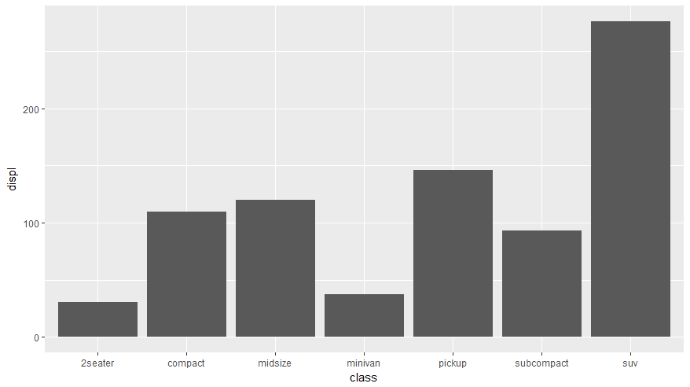
权重：aes(weight=)
下面的语句完成了同样的任务，只不过权重相当于使用了乘法。
# 权重。计算每个 class 内的排放总量
map =ggplot(mpg, aes(class))
map+ geom_bar(aes(weight=displ))
### 条形图排序
＃对数据排序后，再画条形图，即可得到顺序条形图
class2<-mpg$class
class2<-reorder(class2,class2,length)
mpg$class2<-class2
map<-ggplot(mpg,aes(x=class2))
map+geom_bar(aes(fill=class2))
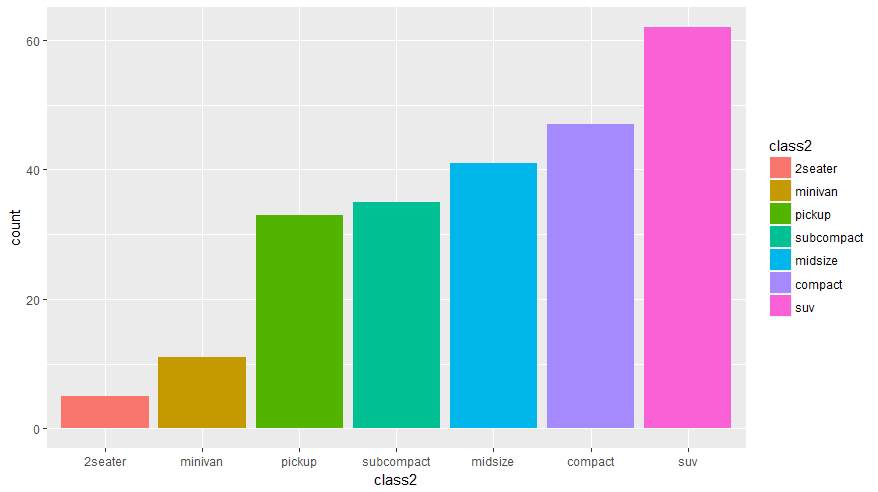
### 条形图
map<-ggplot(mpg,aes(class2,fill=factor(year)))
map+geom_bar(position="identity",alpha=0.5)
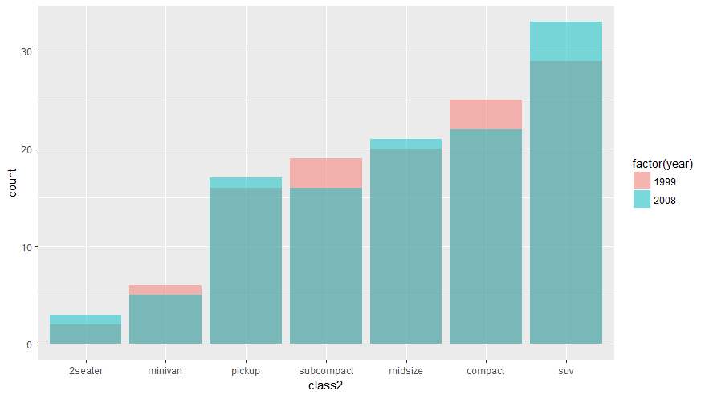
条形图 并立方式
map<-ggplot(mpg,aes(class2,fill=factor(year)))
map+geom_bar(position="dodge")

条形图 叠加方式
map<-ggplot(mpg,aes(class2,fill=factor(year)))
map + geom_bar(position="stack")
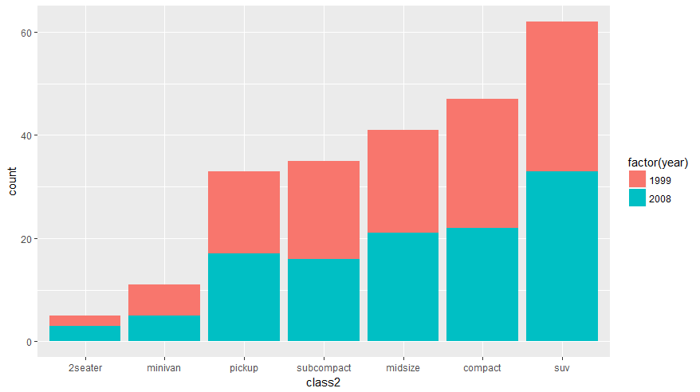
条形图 相对比例
map<-ggplot(mpg,aes(class2,fill=factor(year)))
map+geom_bar(position="fill")
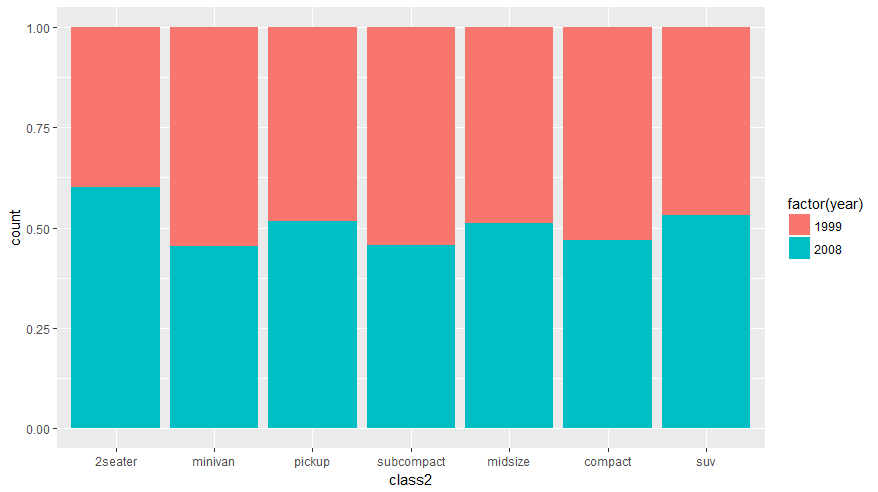
条形图分面显示
map<-ggplot(mpg,aes(class2,fill=factor(year)))
map +geom_bar(aes(fill=class2))+facet_wrap(~year)
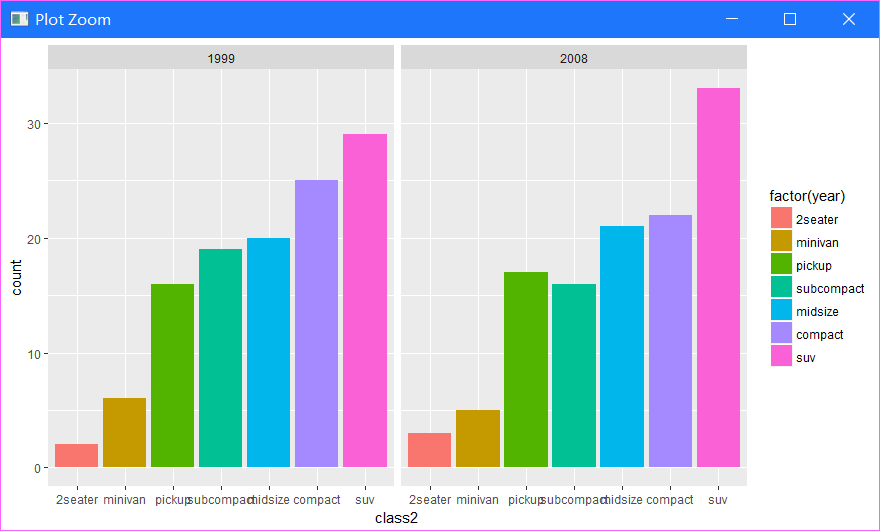
饼图
map<-ggplot(mpg,aes(x=factor(1),fill=factor(class)))+geom_bar(width=1)
map+coord_polar(theta="y")
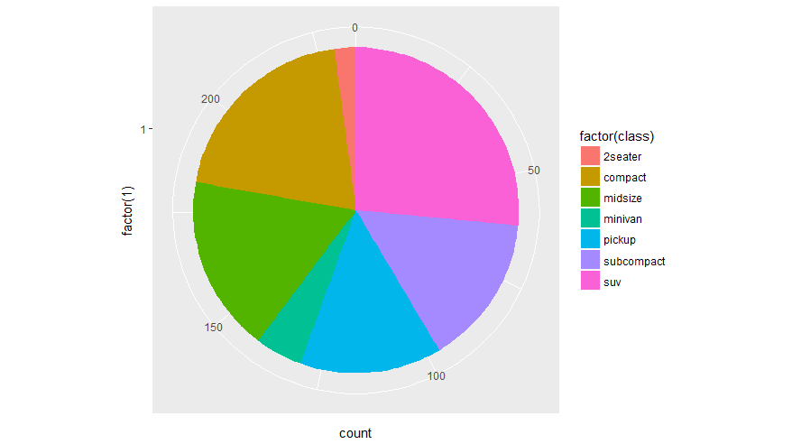
箱线图
map<-ggplot(mpg,aes(class,hwy,fill=class))
map+geom_boxplot()
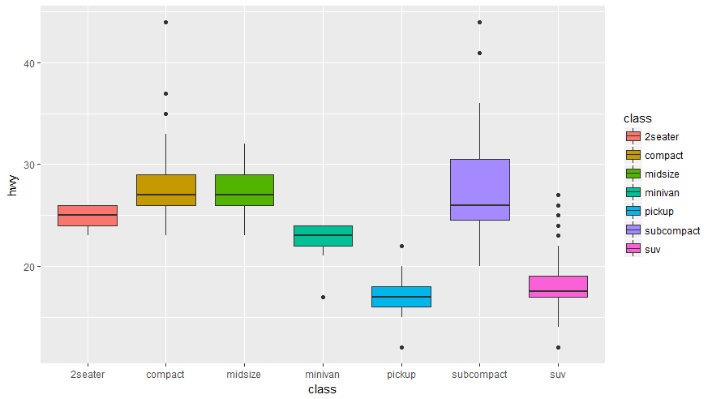
- 箱线图
map<-ggplot(mpg,aes(class,hwy,fill=class))
map+geom_violin(alpha=0.3,width=0.9)+geom_jitter(shape=21)
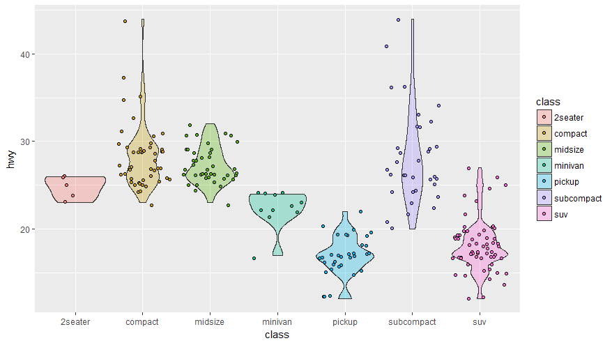
参考文章
ggplot2 官方的函数索引教程
R语言之ggplot2画图篇
R语言（ggplot2绘图）